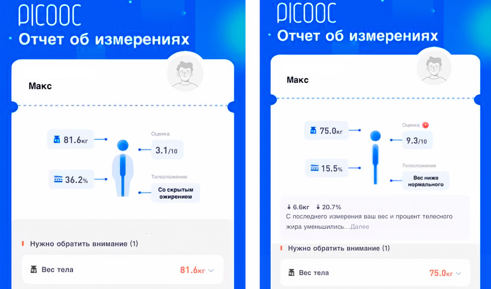
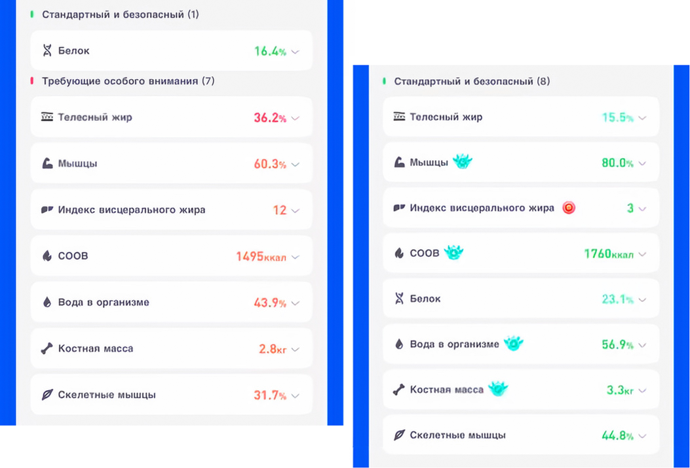
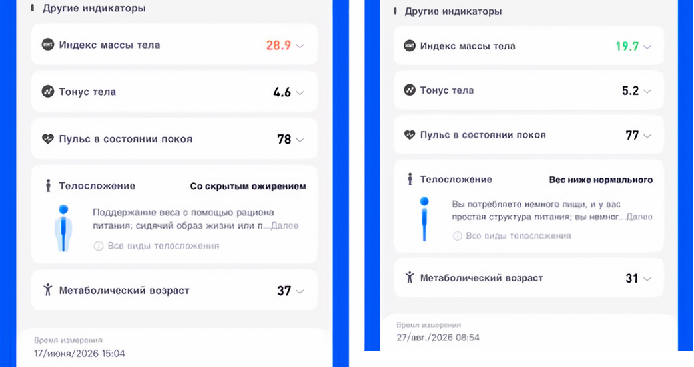

Теряю по 1 кг в неделю, для этого каждое утро пью по одной ложке советского...
Можете взглянуть на результаты этого лета, которые намерили мои весы: слева взвешивание от 17 июня, справа — от 27 августа. Разница — почти два месяца.



К этим результатам, конечно, не стоит относиться слишком серьёзно, ведь за это время я набрал полкило костей 😐. Надеюсь, хоть общую массу правильно измеряют!
Но вот подведённые ими итоги (на последнем скрине) меня впечатлили: они на 100% верны.
Но положительная динамика точно есть. Что для этого потребовалось:
-
Пять тренировок в неделю: 1–2 силовые тренировки в зале (в формате ОФП) + 3–4 интенсивных тренировки в
падел
, так как я не умею играть в теннис и вообще это не спорт; лучше плохо играть в теннис, чем хорошо в падел. - Дополнение, а иногда замена (особенно если хочется чего-то сладкого) приёмов пищи экспонента-like напитками.
- Бутылка с водой на рабочем месте (я пью из полуторалитровой миксули, купленной на Бали за 100 рублей).
Хотелось бы, конечно, набрать ещё килограммов пять мышечной массы, а для этого надо переходить к более тяжёлым тренировкам в зале.
← Назад к списку статей